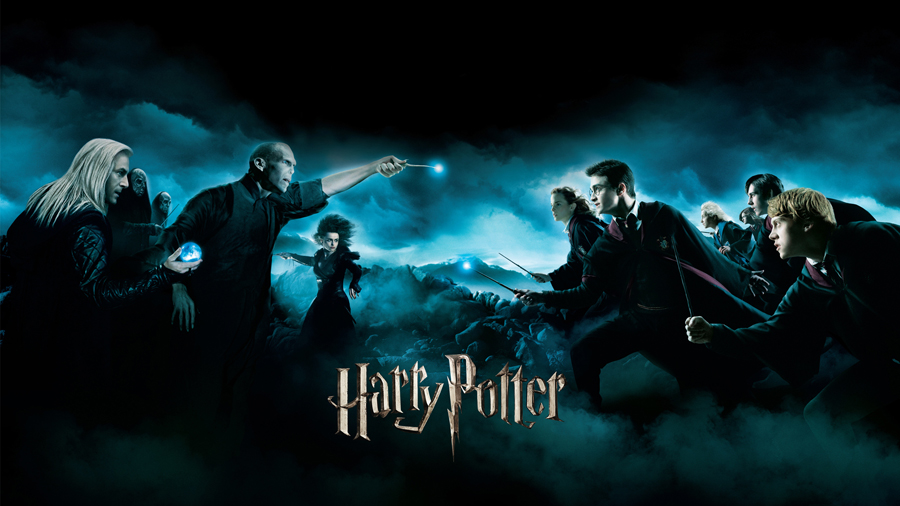
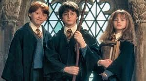

harry potter

Harry Potter é uma série de oito filmes de fantasia escrita pela autora britânica J. K. Rowling.
A série narra as aventuras de um jovem chamado Harry James Potter, que descobre aos 11 anos de idade que é um bruxo ao ser convidado para estudar na Escola de Magia e Bruxaria de Hogwarts
filmes
Harry Potter e a pedra filosofal
Harry Potter e a camara secreta
Harry Potter e o prisioneiro de Azkaban
Harry Potter e o calice de fogo
Harry Potter e a ordem da fenix
Harry Potter e o enigma do principe
Harry Potter e as reliquias da morte pt1
Harry Potter e as reliquias da morte pt2
personagens principais
